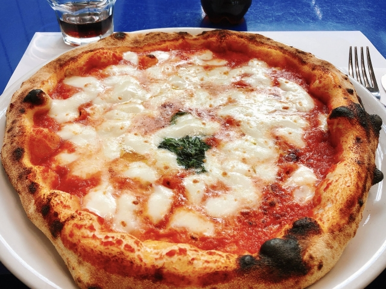
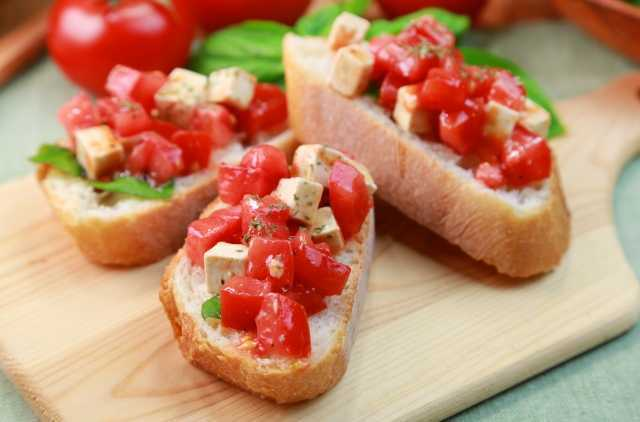

イタリアのピザ・マルゲリータは、ナポリ発祥のシンプルなピザです。
トマトソース、モッツァレラチーズ、バジルが使われ、イタリアの国旗の色（赤、白、緑）を表しています。
高温の窯で短時間で焼き上げられ、生地の香ばしさと具材のフレッシュな味わいが特徴です。

イタリアのブルスケッタは、焼いたパンに様々な具材を乗せた前菜です。
最も一般的なものは、トーストしたパンにニンニクをこすりつけ、新鮮な刻んだトマト、バジル、オリーブオイルを乗せたものです。
その他にも、生ハム、チーズ、キノコなど、季節や地方によって様々なバリエーションがあります。